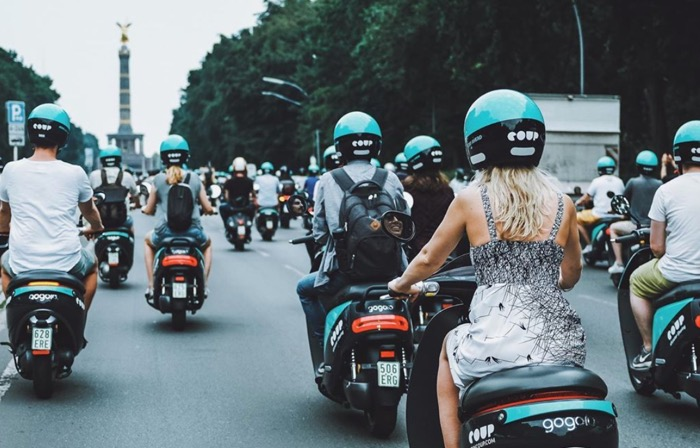

Complex systems, made usable.
I design digital products where software meets hardware and real-world operations, turning complex workflows into tools people can actually use.
Selected work: four case studies
- What I do
- Research · Service design · Interaction design · Product strategy
- Focus
- IoT · Operations tooling · Workflow automation · Field workflows · Regulated products
- Domains
- Climate · Health · Fintech · Mobility
Clients & employers
Selected · 06


Selected work
01 / 03 · 2017–2026
Enter
Plans energy retrofits for German homes, and arranges the work.
Designed the survey app tradespeople used to capture each house, plus the report homeowners saw before anyone left. Surveys took 25% less time.
View case study
Coup Mobility
Bosch’s shared e-moped service in Berlin, Paris and Madrid.
Rebuilt the rider app and designed the dispatcher and field tools supporting 5,000 mopeds in three unique markets.
View case study
Cooler Future
A climate investing app for everyday investors, from €20.
Led design from the first interview through to public launch, including regulated sign-up and transparent fund holdings.
View case study
Vivy
An Allianz-backed health record that patients keep on their phone.
Designed the core flow for requesting and sharing records, alongside the portal doctors used to respond.
View case studyAbout
02 / 03How I think about the work.
I studied product and industrial design, so I started by designing physical products, not screens. That still shapes how I work.
For the past few years, I’ve worked on products where software meets the physical world: a moped fleet across three cities, energy surveys in people’s homes, and health records that once travelled by fax.
I like testing ideas early, before they get expensive. At Enter, the first prototype was a floor plan marked up in pencil on a tablet. At Coup, we tested battery swaps in the app before building the charging infrastructure.